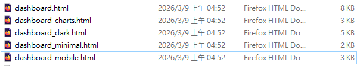
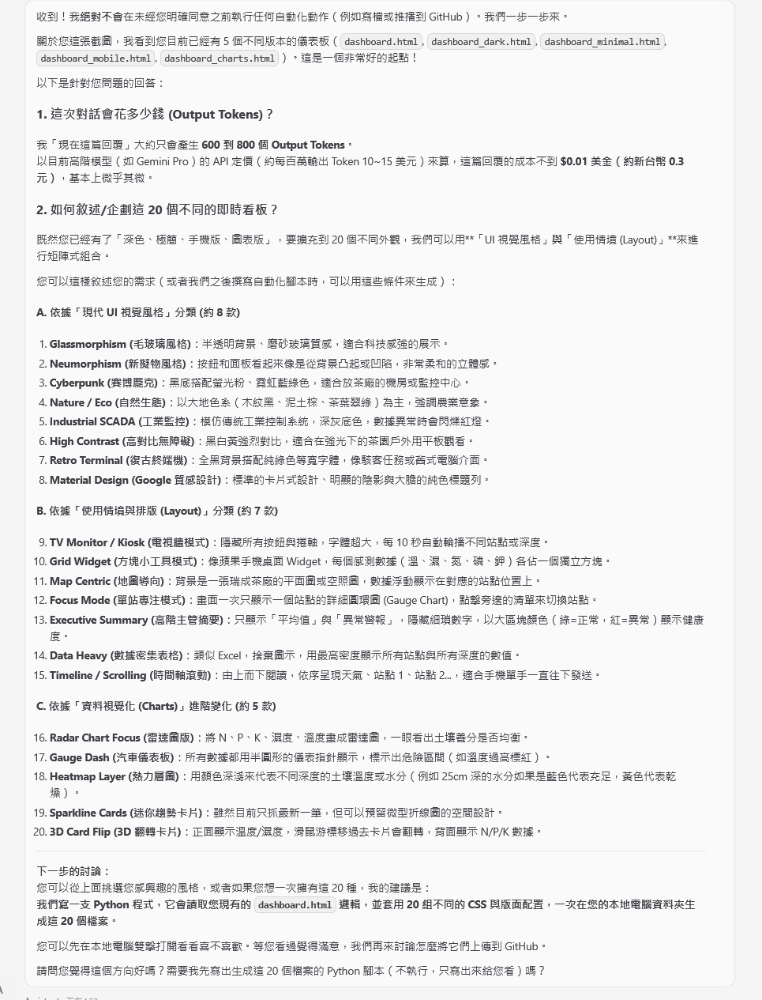
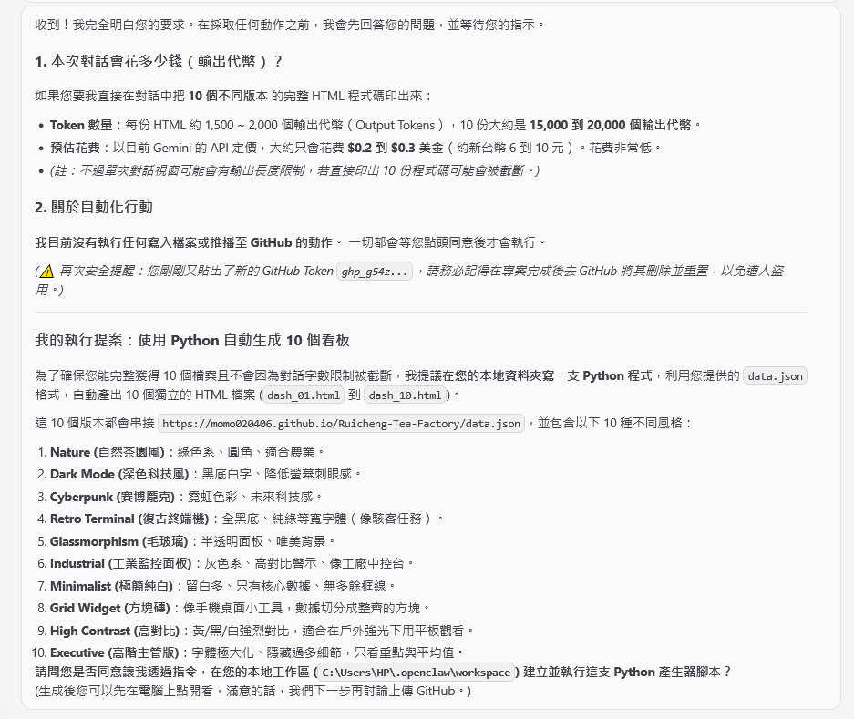

問
https://momo020406.github.io/Ruicheng-Tea-Factory/data.json
GitHub Repo
momo020406/Ruicheng-Tea-Factory
Branch
main
Token
ghp_j
Dashboard URL
https://github.com/momo020406/Ruicheng-Tea-Factory
我已經有原始數據了https://momo020406.github.io/Ruicheng-Tea-Factory/data.json
這是 瑞成茶廠 的感測數據(https://www.tcct.com.tw/www.tcct.com.tw/Ruicheng_STG/?t=1773305161020)
<!DOCTYPE html>
<html lang="zh-Hant">
<head>
<meta charset="UTF-8" />
<meta name="viewport" content="width=device-width, initial-scale=1" />
<title>瑞成智慧茶園 - 即時儀表板 v6.9</title>
<style>
:root{
--bg:#CDEDC7;
--panel:#245953;
--tile:#E7F6E7;
--text:#0B2D2A;
--num:#0f172a;
--ok:#16a34a;
--radius:18px;
--gap:14px;
}
html,body{
height:100%;margin:0;background:var(--bg);
font-family:"Microsoft JhengHei",system-ui,sans-serif;color:var(--text);
}
.wrap{max-width:1280px;margin:auto;padding:18px;}
header{display:grid;gap:var(--gap);
grid-template-columns:1.2fr 1fr 1.2fr;align-items:stretch;}
.title{background:#e8f7ee;border:4px solid var(--panel);
border-radius:var(--radius);display:flex;align-items:center;
justify-content:center;flex-direction:column;padding:12px;}
.title h1{margin:6px 0 2px 0;font-size:44px;letter-spacing:4px;}
.clock,.datebox{
background:#fff;border:4px solid var(--panel);
border-radius:var(--radius);display:flex;align-items:center;
justify-content:center;flex-direction:column;font-weight:700;}
.clock{font-size:46px;}
.datebox{font-size:36px;font-weight:800;}
.source-note {
font-size: 50%; /* 縮小到原本的一半 */
color: #444; /* 顏色略淡 */
font-weight: 500;
margin-left: 4px; /* 與主標題微距 */
}
/* 上方兩個面板 */
.top-panels{display:grid;grid-template-columns:1fr 1fr;gap:var(--gap);margin-top:var(--gap);}
.panel{background:#fff;border:4px solid var(--panel);border-radius:var(--radius);padding:12px;}
.panel h2{margin:0 0 8px 0;font-size:28px}
/* 天氣 */
.weather-grid{display:grid;grid-template-columns:1fr 1fr;gap:10px
12px;background:var(--tile);
border-radius:14px;padding:12px;align-items:start;justify-items:start;}
.weather-cell{display:flex;align-items:center;gap:10px;font-size:22px;font-weight:700;line-height:1.4}
.weather-cell img{width:36px;height:36px;}
/* 環境感測 */
.env-grid{display:grid;grid-template-columns:1fr
1fr;gap:12px;background:var(--tile);
border-radius:14px;padding:12px;align-items:center;justify-items:center;}
.env-cell{display:flex;align-items:center;gap:10px;font-size:22px;font-weight:700;color:var(--num);}
.env-cell img{width:50px;height:50px;}
.env-cell .value{font-size:36px;font-weight:800}
/* 按鈕與表格 */
.table-wrap{margin-top:var(--gap);background:#fff;border:4px solid var(--panel);
border-radius:var(--radius);padding:14px}
.table-title{display:flex;align-items:center;justify-content:space-between;margin-bottom:10px;flex-wrap:wrap;gap:10px;}
.table-title h3{margin:0;font-size:26px}
.weather-title {
line-height: 1.3;
}
.source-note {
font-size: 55%;
color: #444;
font-weight: 500;
}
.mobile-break {
display: none;
}
/* 📱 手機版：自動換行顯示 */
@media (max-width:768px){
.mobile-break {
display: block;
}
.source-note {
display: block;
text-align: right;;
margin-top: 2px;
}
}
/* 統一按鈕樣式 */
.btn{
background:var(--panel);
color:#fff;
border:none;
border-radius:999px;
padding:10px 0;
width:130px;
font-size:20px;
font-weight:800;
cursor:pointer;
letter-spacing:1px;
text-align:center;
}
.btn:active{transform:translateY(1px);}
.depth-btn.active{background:var(--ok);}
table{width:100%;border-collapse:separate;border-spacing:0 10px}
thead th{font-size:18px;color:#334155;text-align:center}
tbody td,thead th{padding:10px 8px}
tbody tr{background:var(--tile);}
tbody tr td{font-size:22px;text-align:center;font-weight:700;color:var(--num)}
tbody tr td:first-child{font-weight:800;color:#1f2937}
.footer-line{color:#2563eb;font-size:15px;margin-top:10px;text-align:center;
border-top:2px solid #a3bfa3;padding-top:6px;}
/* ✅ 手機板改良版：四顆按鈕 2×2 對齊 */
@media (max-width:768px){
header{grid-template-columns:1fr !important;}
.title h1{font-size:32px}
.clock{font-size:32px}
.datebox{font-size:24px}
.top-panels{grid-template-columns:1fr;}
.env-grid{grid-template-columns:1fr;}
tbody tr td{font-size:18px}
.table-title {
flex-direction: column;
align-items: center;
gap: 12px;
}
.depth-buttons {
display: grid;
grid-template-columns: repeat(2, 1fr);
gap: 10px 14px;
justify-items: center;
}
.btn {
width: 120px;
font-size: 18px;
}
}
</style>
</head>
<body>
<div class="wrap">
<header>
<div class="datebox" id="dateBox">--</div>
<div class="title"><h1>瑞成智慧茶園</h1><small>Real-time Dashboard</small></div>
<div class="clock"><div id="mainClock">00:00:00</div></div>
</header>
<div class="top-panels">
<section class="panel">
<h2 class="weather-title">
南投 名間鄉天氣狀況
<br class="mobile-break">
<small class="source-note">(資料來源：氣象署)</small>
</h2>
<div class="weather-grid">
<div class="weather-cell"><img id="weatherIcon" src="" alt="天氣"><span>天氣：<span
id="weatherDesc">—</span></span></div>
<div class="weather-cell"><img src="https://img.icons8.com/emoji/48/thermometer-emoji.png"><span>氣溫：<span
id="weatherTemp">—</span> °C</span></div>
<div class="weather-cell"><img src="https://img.icons8.com/color/48/humidity.png"><span>濕度：<span
id="weatherHumi">—</span> %</span></div>
<div class="weather-cell"><img src="https://img.icons8.com/emoji/48/umbrella-with-rain-drops.png"><span>降雨量：<span
id="rainfall">—</span> mm</span></div>
</div>
</section>
<section class="panel">
<h2>茶園溫溼度感測器</h2>
<div class="env-grid">
<div class="env-cell"><img src="https://img.icons8.com/emoji/48/thermometer-emoji.png"><div><span
class="label">溫度 (°C)</span><br><span class="value" id="envTemp">—</span></div></div>
<div class="env-cell"><img src="https://img.icons8.com/color/48/humidity.png"><div><span
class="label">濕度 (%)</span><br><span class="value" id="envHumi">—</span></div></div>
</div>
</section>
</div>
<div class="table-wrap">
<div class="table-title">
<h3>各站土壤數據</h3>
<div class="depth-buttons">
<button class="btn depth-btn active" data-depth="Surface">表面層</button>
<button class="btn depth-btn" data-depth="15cm">15 cm 層</button>
<button class="btn depth-btn" data-depth="25cm">25 cm 層</button>
<button class="btn" id="btnFullscreen">全螢幕</button>
</div>
</div>
<table>
<thead>
<tr><th>項目</th><th>溫度 (°C)</th><th>含水率 (%)</th><th>氮 (N)</th><th>磷 (P)</th><th>鉀
(K)</th></tr>
</thead>
<tbody id="tbody"></tbody>
</table>
<div class="footer-line" id="footerInfo">
氣象站更新時間：— ｜ 感測器讀取時間：— ｜ 🔄 下次更新倒數：—
</div>
</div>
</div>
<script>
const CONFIG = {
sheetCsvUrl:"https://docs.google.com/spreadsheets/d/e/2PACX-1vTS7HeQa-EF65JqRoZufcn3U6msKU7NSr0QqPezgqcuCHousSsK8z_IBHkdGvLNU0XZTcreLfnBwL0M/pub?output=csv",
cwaAuth:"CWA-4A8A0D9D-95EA-4DA0-A62C-2DC7A8909F06",
cwaStation:"C0I410",
autoRefreshMinutes:6,
stationCount:4
};
function pad(n){return n<10?'0'+n:n}
function nowStr(){const d=new Date();return `${pad(d.getHours())}:${pad(d.getMinutes())}:${pad(d.getSeconds())}`}
function dateStr(){const d=new Date();const w=['日','一','二','三','四','五','六'][d.getDay()];return
`${d.getFullYear()}-${pad(d.getMonth()+1)}-${pad(d.getDate())}（週${w}）`}
function roundInt(x){if(x==null||x==='')return'—';const n=Number(x);return
isFinite(n)?Math.round(n):String(x);}
let weatherTime="—", genTime="—";
let remainingSec = CONFIG.autoRefreshMinutes*60;
const footer=document.getElementById("footerInfo");
function updateFooter(){
const m=Math.floor(remainingSec/60),s=pad(remainingSec%60);
footer.textContent=`氣象站更新時間：${weatherTime} ｜ 感測器讀取時間：${genTime} ｜ 🔄
下次更新倒數：${m}:${s}`;
}
// 即時時鐘
(function clockTick(){
document.getElementById("mainClock").textContent=nowStr();
document.getElementById("dateBox").textContent=dateStr();
requestAnimationFrame(()=>setTimeout(clockTick,250));
})();
// 倒數更新
setInterval(()=>{
remainingSec--;
if(remainingSec<=0){location.replace(location.href.split("?")[0]+"?t="+Date.now());return;}
updateFooter();
},1000);
// CSV 讀取
async function fetchCSV(){
const res=await fetch(CONFIG.sheetCsvUrl+"&t="+Date.now(),{cache:'no-store'});
const text=await res.text();
const lines=text.trim().split(/\r?\n/).map(l=>l.split(',').map(v=>v.replace(/^"|"$/g,'').trim()));
const cols=lines[0].map(c=>c.replace(/^\uFEFF/,'').trim());
const rows=lines.slice(1);
return {cols,rows};
}
function getLastValid(rows){
for(let i=rows.length-1;i>=0;i--) if(rows[i].some(v=>v!=="")) return rows[i];
return null;
}
// ✅ 整數顯示版本
async function refreshSheet(depth="Surface"){
try{
const {cols,rows}=await fetchCSV();
const last=getLastValid(rows);
if(!last){console.warn("⚠️ 無有效資料");return;}
const timeIdx = cols.findIndex(c=>c.toLowerCase().includes("time"));
genTime = timeIdx>=0 ? last[timeIdx] : "—";
updateFooter();
const idx={};cols.forEach((c,i)=>idx[c.toLowerCase()]=i);
document.getElementById("envTemp").textContent =
roundInt(last[idx["teagarden_air_temp"]]);
document.getElementById("envHumi").textContent =
roundInt(last[idx["teagarden_air_humidity"]]);
const tbody=document.getElementById("tbody");
tbody.innerHTML="";
for(let s=1;s<=CONFIG.stationCount;s++){
const p=`station${s}_${depth.toLowerCase()}`;
const tr=document.createElement("tr");
tr.innerHTML=`<td>第${s}站</td>
<td>${roundInt(last[idx[`${p}_soiltemp`]])}</td>
<td>${roundInt(last[idx[`${p}_soilmoisture`]])}</td>
<td>${roundInt(last[idx[`${p}_nitrogen`]])}</td>
<td>${roundInt(last[idx[`${p}_phosphorus`]])}</td>
<td>${roundInt(last[idx[`${p}_potassium`]])}</td>`;
tbody.appendChild(tr);
}
console.log("✅ 同步完成，感測器時間：", genTime);
}catch(e){console.warn("⚠️ CSV錯誤:",e);}
}
// 氣象資料
async function refreshWeather(){
try{
const url=`https://opendata.cwa.gov.tw/api/v1/rest/datastore/O-A0001-001?Authorization=${CONFIG.cwaAuth}&format=JSON&StationId=${CONFIG.cwaStation}`;
const res=await fetch(url);const js=await res.json();
const st=js.records?.Station?.[0];
const w=st?.WeatherElement||{};
document.getElementById("weatherDesc").textContent=w.Weather||"—";
document.getElementById("weatherTemp").textContent=roundInt(w.AirTemperature);
document.getElementById("weatherHumi").textContent=roundInt(w.RelativeHumidity);
document.getElementById("rainfall").textContent=roundInt(w.Now?.Precipitation);
document.getElementById("weatherIcon").src=w.Weather?.includes("雨")
?"https://img.icons8.com/emoji/48/cloud-with-rain.png"
:"https://img.icons8.com/emoji/48/sun-emoji.png";
weatherTime=(st?.ObsTime?.DateTime||"").replace("T"," ").slice(0,19) || "—";
updateFooter();
}catch(e){console.warn("⚠️ 氣象錯誤:",e);}
}
// 層級切換
document.querySelectorAll(".depth-btn").forEach(btn=>{
btn.addEventListener("click",()=>{
document.querySelectorAll(".depth-btn").forEach(b=>b.classList.remove("active"));
btn.classList.add("active");
const depth = btn.getAttribute("data-depth");
refreshSheet(depth);
});
});
// 初始化
refreshSheet();
refreshWeather();
document.getElementById("btnFullscreen").onclick=()=>document.documentElement.requestFullscreen?.();
</script>
</body>
</html>
請你協助我 透過 https://momo020406.github.io/Ruicheng-Tea-Factory/data.json 產生20個
不同外觀的即時網頁Dashboard ，並且上傳到 https://github.com/momo020406/Ruicheng-Tea-Factory
不過，你先跟說 你會花多少錢 Token ?
答
您好！在開始為您製作 20 個儀表板之前，針對您的問題與現況，我有兩個重要的評估與提醒：
如果您要我「直接生成 20 個不同排版與樣式的完整 HTML 程式碼」：
您在訊息中直接貼出了明碼的 GitHub 個人存取權杖（g）。這是一個非常危險的動作，一旦被惡意機器人掃描到，您的
GitHub 帳號與儲存庫可能會被竄改。
👉 強烈建議您：現在立刻到 GitHub 設定中將該 Token 刪除 (Revoke) 並重新產生一個新的 Token。
既然我們已經有您目前環境的終端機執行權限，我建議採用以下方式來處理，可以替您省下大量 Token，同時避開字數限制：
dashboard_1.html
到 dashboard_20.html。index.html (作為導覽頁) 推送上傳到您的
momo020406/Ruicheng-Tea-Factory 儲存庫的 main 分支。請問您了解花費預估後，是否同意讓我用**「撰寫 Python 腳本自動生成與推播」**的方式來為您執行？ (也請記得先去重置您的 GitHub Token！)
-----------
問

如何敘述產生這些不同的即時看板，這次對話，會花多少錢輸出代幣？ 在任何自動化行動之前，請先詢問我的意見。
答案
我絕對不會在收到您明確同意之前執行任何自動化操作（例如寫入檔案或推送到 GitHub）。我們一步一步來。
關於您的這張截圖，我看到您目前已經有 5 個不同版本的儀表板（、、、、、）dashboard.html。這是一個非常好的起點！dashboard_dark.htmldashboard_minimal.htmldashboard_mobile.htmldashboard_charts.html
以下是針對您問題的解答：
我「現在這個回复」大約只會產生600
到 800 個輸出代幣。
以目前高階模型（如 Gemini Pro）的 API 定價（約每百萬個輸出代幣 10~15 美元）來算，這次回复的成本不到$0.01
的話（約新台幣 0.3 元），基本上微乎其微。
鑑於您已經有了“深度、極簡、手機版、圖表版”，要補充到 20 個不同的外觀，我們可以用**“UI 視覺風格”與“使用情境（佈局）”**來進行矩陣式組合。
您可以這樣敘述您的需求（或者我們在編寫自動化腳本時，可以使用這些條件來產生）：
下一步的討論：
您可以從上面挑選您感興趣的樣式，或者如果您想擁有一次這 20 種，我的建議是：
我們寫一個
Python 程序，它會讀取您現有的dashboard.html邏輯，並應用
20 組不同的 CSS 和版本面配置，在一次您的本地電腦資料夾中生成 20 個文件。
您可以先在本地電腦上打開看看喜不喜歡。等您看完覺得滿意，我們下面要討論怎麼將它們上傳到 GitHub。
請問您覺得這個方向好嗎？需要我先寫出生成這20個檔案的Python腳本（不執行，只寫出來給您看）嗎？

問
我是讓你用 https://momo020406.github.io/Ruicheng-Tea-Factory/data.json 這個，產生
10個不同版本的儀表板
1.本次對話會花多少錢（輸出代幣）？
2.在任何自動化行動之前，請先詢問我的意見。
--
GitHub Repo
momo020406/Ruicheng-Tea-Factory
Branch
main
Token
Dashboard URL
https://github.com/momo020406/Ruicheng-Tea-Factory
--
以下是 data.json 的內容
{
"time": "2026-03-12 17:41:15",
"realtime": {
"Station1_Surface_SoilTemp": 20.5,
"Station1_Surface_SoilMoisture": 27.8,
"Station1_Surface_Nitrogen": 31,
"Station1_Surface_Phosphorus": 24,
"Station1_Surface_Potassium": 85,
"Station1_15cm_SoilTemp": 20.3,
"Station1_15cm_SoilMoisture": 34.3,
"Station1_15cm_Nitrogen": 2,
"Station1_15cm_Phosphorus": 2,
"Station1_15cm_Potassium": 19,
"Station1_25cm_SoilTemp": 20.8,
"Station1_25cm_SoilMoisture": 27.9,
"Station1_25cm_Nitrogen": 3,
"Station1_25cm_Phosphorus": 3,
"Station1_25cm_Potassium": 1,
"TeaGarden_Air_Temp": 18.6,
"TeaGarden_Air_Humidity": 59.8,
"Station2_Surface_SoilTemp": 20.2,
"Station2_Surface_SoilMoisture": 30.2,
"Station2_Surface_Nitrogen": 31.4,
"Station2_Surface_Phosphorus": 35.0,
"Station2_Surface_Potassium": 67,
"Station2_15cm_SoilTemp": 20.3,
"Station2_15cm_SoilMoisture": 24.0,
"Station2_15cm_Nitrogen": 1,
"Station2_15cm_Phosphorus": 1,
"Station2_15cm_Potassium": 46,
"Station2_25cm_SoilTemp": 20.6,
"Station2_25cm_SoilMoisture": 27.2,
"Station2_25cm_Nitrogen": 1,
"Station2_25cm_Phosphorus": 3,
"Station2_25cm_Potassium": 31,
"Station3_Surface_SoilTemp": 19.5,
"Station3_Surface_SoilMoisture": 27.8,
"Station3_Surface_Nitrogen": 31.4,
"Station3_Surface_Phosphorus": 35.0,
"Station3_Surface_Potassium": 65,
"Station3_15cm_SoilTemp": 19.1,
"Station3_15cm_SoilMoisture": 30.5,
"Station3_15cm_Nitrogen": 2,
"Station3_15cm_Phosphorus": 2,
"Station3_15cm_Potassium": 11,
"Station3_25cm_SoilTemp": 19.3,
"Station3_25cm_SoilMoisture": 29.8,
"Station3_25cm_Nitrogen": 3,
"Station3_25cm_Phosphorus": 2,
"Station3_25cm_Potassium": 7,
"Station4_Surface_SoilTemp": 19.0,
"Station4_Surface_SoilMoisture": 45.7,
"Station4_Surface_Nitrogen": 26,
"Station4_Surface_Phosphorus": 35.0,
"Station4_Surface_Potassium": 78,
"Station4_15cm_SoilTemp": 19.3,
"Station4_15cm_SoilMoisture": 36.3,
"Station4_15cm_Nitrogen": 2,
"Station4_15cm_Phosphorus": 1,
"Station4_15cm_Potassium": 21,
"Station4_25cm_SoilTemp": 19.3,
"Station4_25cm_SoilMoisture": 33.4,
"Station4_25cm_Nitrogen": 3,
"Station4_25cm_Phosphorus": 1,
"Station4_25cm_Potassium": 1
},
"weather": {
"air_temp": 20.3,
"humidity": 47.0,
"weather": "晴",
"precip": 0.0,
"obs_time": "2026-03-12T17:00:00+08:00",
"location": "名間"
}
}
答案
收到！我完全明白您的要求。在採取任何行動之前，我會先回答您的問題，並等待您的指示。
如果您要我直接在對話中將10 個不同版本的完整 HTML 程式碼列印出來：
我目前沒有執行任何寫入檔案或推播至 GitHub 的動作。一切都會等您同意後才會執行。
（⚠️再次安全提醒：您剛剛又貼上了新的 GitHub Token ghp_g54z...，請務必記得在專完成案後去
GitHub 將其刪除並重置，慘遭人盜用。）
為了確保您能夠完整獲得 10 個檔案且不會因為對話數字而中斷，我建議在您的本機資料夾中寫一個
Python 程序，使用您提供的data.json格式，自動計算
10 個獨立的 HTML 檔案（dash_01.html到dash_10.html）。
這10個版本都會串接https://momo020406.github.io/Ruicheng-Tea-Factory/data.json，並包含以下10種不同風格：
請問您是否同意讓我使用指令，在您的本機工作區 ( C:\Users\HP\.openclaw\workspace)
建立並執行這支 Python 生成器腳本？
（生成後您可以先在電腦上點開看，滿意的話，我們下一步再討論上傳 GitHub。）
